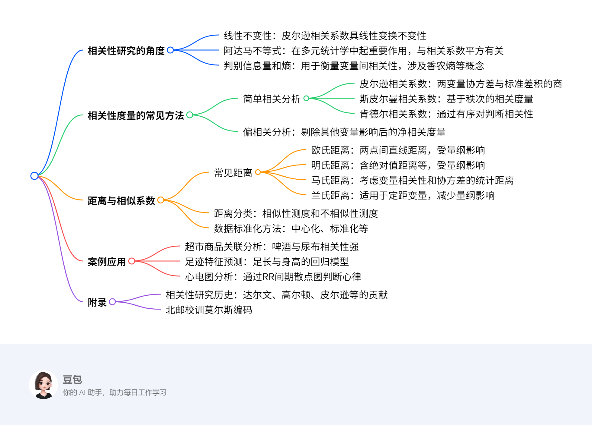

第六章：相关性度量¶
概览¶
一段话总结¶
文档围绕多元统计分析中的相关性度量展开，介绍了相关性研究的线性不变性、阿达马不等式、判别信息量和熵三个角度，阐述了简单相关分析（含皮尔逊、斯皮尔曼、肯德尔相关系数）、偏相关分析等常见方法，以及欧氏距离、明氏距离、马氏距离等距离与相似系数，还通过啤酒与尿布的关联、足迹与身高的测算、心电图分析等案例，展示了相关性度量在实际中的应用。
思维导图¶

详细总结¶
一、相关性研究的角度¶
- 线性不变性：皮尔逊相关系数在变量线性变换（如AX、BY，A、B为非零常数）下保持不变，即\(\rho(AX,BY)=\rho(X,Y)\)，这使其在数据尺度变换时仍能反映真实相关性。
- 阿达马不等式：对于正定矩阵\(A=(a_{ij})_{n\times n}\)，有\(|A|\leq\prod_{i=1}^{n}a_{ii}\)。在多元统计中，该不等式用于推导相关系数平方\(R^2\)，如\(R^2=1-[\frac{|A|}{\prod_{i=1}^{n}a_{ii}}]\)，反映变量间的线性关联程度。
- 判别信息量和熵：
- 判别信息量（互信息）\(I(X;Y)=\int\int p(x,y)\ln\frac{p(x,y)}{p(x)p(y)}dxdy\)，衡量变量X和Y的依赖程度，当\((X,Y)\sim N(\mu_1,\mu_2,\sigma_1^2,\sigma_2^2,\rho)\)时，\(I(X;Y)=-\frac{1}{2}\ln(1-\rho^2)\)。
- 熵\(H(f(x))=-E[\ln f(x)]\)，用于描述变量的不确定性，多元正态分布下\(H(f(x))=\frac{1}{2}\ln(2\pi e)+\frac{1}{2}\ln|\Sigma|\)。
二、相关性度量的常见方法¶
- 简单相关分析
- 皮尔逊相关系数：\(\rho=\frac{Cov(X,Y)}{\sqrt{D(X)D(Y)}}\)，样本相关系数\(r=\frac{\sum(x_i-\bar{x})(y_i-\bar{y})}{\sqrt{\sum(x_i-\bar{x})^2\sum(y_i-\bar{y})^2}}\)，如高数与概率统计成绩的相关系数可达0.89。
- 斯皮尔曼相关系数：基于变量秩次计算，如黄曲霉素含量与肝癌死亡率数据中，通过秩差平方和\(d^2\)计算，公式为\(r_s=1-\frac{6\sum d^2}{n(n^2-1)}\)。
- 肯德尔相关系数：通过有序对的一致性判断，\(\tau=\frac{2P}{C_n^2}-1\)，其中P为一致对数目。
- 偏相关分析：剔除其他变量影响后的净相关，如剔除Z后X与Y的偏相关系数\(r_{XY\cdot Z}=\frac{r_{XY}-r_{XZ}r_{YZ}}{\sqrt{(1-r_{XZ}^2)(1-r_{YZ}^2)}}\)，可纠正如儿童身高与言语能力研究中年龄因素的干扰。
三、距离与相似系数¶
- 常见距离
- 欧氏距离：\(d_{ij}=\sqrt{\sum_{k=1}^{m}(x_{ik}-x_{jk})^2}\)，如甲乙两城市三项指标的欧氏距离为57.21。
- 明氏距离：\(d_{ij}(q)=[\sum_{k=1}^{m}|x_{ik}-x_{jk}|^q]^{1/q}\)，q=1时为绝对值距离，q=2时为欧氏距离，q→∞时为切比雪夫距离。
- 马氏距离：\(d_{ij}=\sqrt{(x_i-x_j)^T\Sigma^{-1}(x_i-x_j)}\)，考虑变量协方差，如甲乙城市的马氏距离为2.25。
- 兰氏距离：\(d_{ij}=\sum_{k=1}^{m}\frac{|x_{ik}-x_{jk}|}{x_{ik}+x_{jk}}\)，减少量纲影响。
- 距离分类
- 不相似性测度：包括定距型变量的欧氏距离、绝对距离，定序型变量的卡方测度，二值变量的欧氏距离等。
- 相似性测度：定距型变量的皮尔逊相关系数、夹角余弦，二值变量的简单匹配系数、Jaccard系数等。
- 数据标准化方法：中心化（\(x_{ij}'=x_{ij}-\bar{x}_j\)）、标准化（\(z_{ij}=\frac{x_{ij}-\bar{x}_j}{s_j}\)）、极差标准化等，使不同量纲数据可比较。
四、案例应用¶
- 超市商品关联分析：通过购物篮数据计算相关系数，发现啤酒与尿布相关性最强，指导商品摆放。
- 足迹特征预测：中国刑事警察学院设计的足迹测算尺，利用标准化身高=标准化足长×6.875的回归模型，如足长24cm对应身高约170cm。
- 心电图分析：通过Lorenz散点图分析RR间期，窦性心律呈特定分布，室上性早搏时B线斜率在0.18～0.8之间。
五、附录¶
- 相关性研究历史：达尔文提出生物特征相关性，高尔顿绘制历史第一张散点图研究父母与子女身高关系，皮尔逊给出第一个相关系数计算公式。
- 北邮校训莫尔斯编码：“厚德博学敬业乐群”对应莫尔斯电码，体现信息论应用。
关键问题¶
- 问题：皮尔逊相关系数的定义及为何具有线性不变性？
- 答案：皮尔逊相关系数定义为两变量协方差与标准差积的商，即\(\rho=\frac{Cov(X,Y)}{\sqrt{D(X)D(Y)}}\)。其具有线性不变性是因为对于任意非零常数A、B，\(\rho(AX,BY)=\rho(X,Y)\)，这是由于线性变换不改变变量间的相对变化趋势，仅改变尺度，因此相关系数保持不变。
- 问题：偏相关分析与简单相关分析的主要区别是什么？
- 答案：简单相关分析只考虑两个变量的直接关系，不考虑其他变量影响；而偏相关分析在计算时会控制其他变量，剔除其影响后考察两个变量的净相关。例如研究儿童身高和言语能力时，若不考虑年龄，简单相关会得出身高越高言语能力越强的错误结论，而偏相关剔除年龄影响后可得到真实关系。
- 问题：马氏距离与欧氏距离的主要区别及应用场景是什么？
- 答案：欧氏距离是两点间直线距离，受变量量纲影响，且未考虑变量相关性；马氏距离考虑了变量的协方差矩阵，消除了量纲影响，还考虑了变量间相关性，是一种统计距离。应用场景如在多指标分类问题中，马氏距离可更准确地判断样本属于哪个总体，如甲乙城市的指标分析中，马氏距离能更合理地衡量差异。
6.1 相关性研究的角度¶
6.1.1 不变性¶
1. 线性不变性¶
- 定义：相关性度量在变量进行线性变换后保持不变的性质，其中线性变换是最常用的变换形式。
- 数学表达：对于任意非零常数 \(A\) 和 \(B\)，有 \(\rho(AX, BY) = \rho(X, Y)\)，即皮尔逊相关系数在线性变换下保持不变。
- 原理分析：
- 设随机变量 \(X\) 和 \(Y\) 的协方差为 \(\text{Cov}(X, Y)\)，方差分别为 \(\text{Var}(X)\) 和 \(\text{Var}(Y)\)。
- 对 \(X\) 进行线性变换 \(AX\)，对 \(Y\) 进行线性变换 \(BY\)，则新变量的协方差为 \(\text{Cov}(AX, BY) = AB \cdot \text{Cov}(X, Y)\)。
- 新变量的方差分别为 \(\text{Var}(AX) = A^2 \cdot \text{Var}(X)\)，\(\text{Var}(BY) = B^2 \cdot \text{Var}(Y)\)。
- 代入皮尔逊相关系数公式：\(\rho(AX, BY) = \frac{AB \cdot \text{Cov}(X, Y)}{\sqrt{A^2 \cdot \text{Var}(X) \cdot B^2 \cdot \text{Var}(Y)}} = \frac{\text{Cov}(X, Y)}{\sqrt{\text{Var}(X) \cdot \text{Var}(Y)}} = \rho(X, Y)\)。
- 应用场景：当数据需要进行尺度变换（如温度从摄氏度转换为华氏度）或位置变换（如身高数据减去均值）时，线性不变性确保相关系数能真实反映变量间的相关性。
2. 不同变量维度下的皮尔逊相关系数¶
- 情况1：\(p=1, q=1\)（单变量与单变量）
- 样本相关系数公式：\(r = \frac{\sum (x_i - \bar{x})(y_i - \bar{y})}{\sqrt{\sum (x_i - \bar{x})^2 \sum (y_i - \bar{y})^2}}\)，其中 \(\bar{x}\) 和 \(\bar{y}\) 分别为 \(X\) 和 \(Y\) 的样本均值。
- 例子：已知身高 \(X\)（cm）和体重 \(Y\)（kg）的样本数据如下： | 序号 | \(X\) | \(Y\) | |------|-----|-----| | 1 | 162 | 46 | | 2 | 167 | 56 | | 3 | 175 | 60 |
- 计算步骤：
- 计算均值：\(\bar{x} = \frac{162 + 167 + 175}{3} = 168\)，\(\bar{y} = \frac{46 + 56 + 60}{3} = 54\)。
- 计算分子：\((162-168)(46-54) + (167-168)(56-54) + (175-168)(60-54) = (-6)(-8) + (-1)(2) + (7)(6) = 48 - 2 + 42 = 88\)。
- 计算分母根号内：\(\sum (x_i - \bar{x})^2 = (162-168)^2 + (167-168)^2 + (175-168)^2 = 36 + 1 + 49 = 86\)；\(\sum (y_i - \bar{y})^2 = (46-54)^2 + (56-54)^2 + (60-54)^2 = 64 + 4 + 36 = 104\)；分母为 \(\sqrt{86 \times 104} \approx \sqrt{8944} \approx 94.68\)。
- 相关系数 \(r = \frac{88}{94.68} \approx 0.93\)，说明身高和体重呈强正相关。
- 情况2：\(p=1, q>1\)（单变量与多变量）
- 相关系数矩阵：\([r, r_1, \dots, r_q]\)，其中 \(r\) 为单变量与第一个多变量的相关系数，\(r_i\) 为与第 \(i\) 个多变量的相关系数。
- 情况3：\(p>1, q>1\)（多变量与多变量）
- 采用矩阵形式表示协方差和相关系数，通过矩阵运算分析多变量间的相关性。
6.1.2 阿达马不等式（Hadamard inequality）¶
1. 阿达马不等式内容¶
- 对于 \(n\) 阶正定矩阵 \(A = (a_{ij})_{n \times n}\)，其行列式满足 \(|A| \leq \prod_{i=1}^{n} a_{ii}\)，即矩阵行列式不超过对角线元素的乘积。
2. 在多元统计学中的应用¶
- 相关系数平方 \(R^2\) 的推导：
- 设变量 \(X_1, X_2, \dots, X_p\) 的协方差矩阵为 \(\Sigma\)，其行列式为 \(|\Sigma|\)，对角线元素为 \(\sigma_{11}, \sigma_{22}, \dots, \sigma_{pp}\)。
- 根据阿达马不等式，\(|\Sigma| \leq \prod_{i=1}^{p} \sigma_{ii}\)，定义 \(R^2 = 1 - \frac{|\Sigma|}{\prod_{i=1}^{p} \sigma_{ii}}\)，则 \(R^2 \in [0, 1]\)。
- \(R^2\) 反映了多变量间的线性相关程度，\(R^2\) 越大，变量间相关性越强。
- 例子：\(p=2\) 时的应用
- 设两个变量 \(X\) 和 \(Y\) 的协方差矩阵为 \(\begin{pmatrix} \sigma_{xx} & \sigma_{xy} \\ \sigma_{yx} & \sigma_{yy} \end{pmatrix}\)，行列式 \(|\Sigma| = \sigma_{xx}\sigma_{yy} - \sigma_{xy}^2\)。
- 根据阿达马不等式，\(|\Sigma| \leq \sigma_{xx}\sigma_{yy}\)，则 \(R^2 = 1 - \frac{\sigma_{xx}\sigma_{yy} - \sigma_{xy}^2}{\sigma_{xx}\sigma_{yy}} = \frac{\sigma_{xy}^2}{\sigma_{xx}\sigma_{yy}} = \rho^2\)，即皮尔逊相关系数的平方。
- 这表明当 \(p=2\) 时，\(R^2\) 等于皮尔逊相关系数的平方，体现了阿达马不等式与相关系数的联系。
3. 分块矩阵与阿达马不等式¶
- 对于分块正定矩阵 \(A = \begin{pmatrix} A_{11} & A_{12} \\ A_{21} & A_{22} \end{pmatrix}\)，其中 \(A_{11}\) 和 \(A_{22}\) 为方阵，有 \(|A| \leq |A_{11}| \cdot |A_{22}|\)，进一步扩展了阿达马不等式的应用场景。
6.1.3 判别信息量和熵¶
1. 判别信息量（互信息）¶
- 定义：用于衡量两个随机变量 \(X\) 和 \(Y\) 的依赖程度，记为 \(I(X; Y)\)，数学表达式为：\(I(X; Y) = \int \int p(x, y) \ln \frac{p(x, y)}{p(x)p(y)} dx dy\)，其中 \(p(x, y)\) 为联合概率密度，\(p(x)\) 和 \(p(y)\) 为边缘概率密度。
- 正态分布下的互信息：
- 当 \((X, Y) \sim N(\mu_1, \mu_2, \sigma_1^2, \sigma_2^2, \rho)\) 时，互信息为 \(I(X; Y) = -\frac{1}{2} \ln(1 - \rho^2)\)。
- 例子：已知两正态分布变量 \(X\) 和 \(Y\) 的相关系数 \(\rho = 0.8\)，计算互信息：
- \(I(X; Y) = -\frac{1}{2} \ln(1 - 0.8^2) = -\frac{1}{2} \ln(1 - 0.64) = -\frac{1}{2} \ln(0.36) \approx -\frac{1}{2} \times (-1.0216) \approx 0.5108\)。
- 结果表明 \(X\) 和 \(Y\) 之间存在较强的信息依赖关系。
2. 熵（Entropy）¶
- 定义：用于描述随机变量的不确定性，记为 \(H(f(x))\)，对于连续变量，熵的定义为 \(H(f(x)) = -E[\ln f(x)] = -\int f(x) \ln f(x) dx\)，其中 \(f(x)\) 为概率密度函数。
- 多元正态分布的熵：
- 设 \(X \sim N(\mu, \Sigma)\)，则熵为 \(H(f(x)) = \frac{1}{2} \ln[(2\pi e)^p |\Sigma|]\)，其中 \(p\) 为变量维度，\(|\Sigma|\) 为协方差矩阵的行列式。
- 例子：一维正态分布 \(X \sim N(\mu, \sigma^2)\)，熵为 \(H(f(x)) = \frac{1}{2} \ln(2\pi e \sigma^2)\)。
- 当 \(\sigma^2 = 1\) 时，\(H(f(x)) = \frac{1}{2} \ln(2\pi e) \approx \frac{1}{2} \times 3.2958 \approx 1.6479\)，体现了单位方差正态分布的不确定性度量。
3. 互信息与熵的关系¶
- 互信息可表示为熵的差：\(I(X; Y) = H(X) + H(Y) - H(X, Y)\)，其中 \(H(X, Y)\) 为联合熵，反映了变量 \(X\) 和 \(Y\) 共同的不确定性，互信息越大，说明变量间的相关性越强，共同不确定性越小。
6.2 相关性度量的常见方法¶
6.2.1 简单相关分析¶
1. 皮尔逊相关系数（Pearson coefficient）¶
- 定义：衡量两个连续变量线性相关程度的统计量，取值范围为[-1, 1]，绝对值越大相关性越强。
- 数学公式：
- 总体相关系数：\(\rho_{XY} = \frac{\text{Cov}(X,Y)}{\sqrt{\text{Var}(X)\text{Var}(Y)}} = \frac{E[(X-\mu_X)(Y-\mu_Y)]}{\sqrt{E[(X-\mu_X)^2]E[(Y-\mu_Y)^2]}}\)
- 样本相关系数：\(r = \frac{\sum_{i=1}^{n}(x_i-\bar{x})(y_i-\bar{y})}{\sqrt{\sum_{i=1}^{n}(x_i-\bar{x})^2\sum_{i=1}^{n}(y_i-\bar{y})^2}}\)
- 求解步骤：
- 计算样本均值\(\bar{x}, \bar{y}\)
- 计算分子：各数据点与均值差的乘积和
- 计算分母：两组数据离差平方和的平方根
- 代入公式得到\(r\)
- 例子：计算高数成绩(X)和概率成绩(Y)的相关性 | 学生 | X | Y | |---|---|---| | 1 | 98 | 93 | | 2 | 87 | 91 | | 3 | 92 | 89 |
- 步骤：
- \(\bar{x} = (98+87+92)/3 = 92.33\)，\(\bar{y} = (93+91+89)/3 = 91\)
- 分子：\((98-92.33)(93-91) + (87-92.33)(91-91) + (92-92.33)(89-91)\)
\(= 5.67×2 + (-5.33)×0 + (-0.33)×(-2) = 11.34 + 0 + 0.66 = 12\) - 分母：\(\sqrt{[(98-92.33)^2+(87-92.33)^2+(92-92.33)^2][(93-91)^2+(91-91)^2+(89-91)^2]}\)
\(= \sqrt{[32.15+28.41+0.11][4+0+4]} = \sqrt{60.67×8} ≈ \sqrt{485.36} ≈ 22.03\) - \(r = 12/22.03 ≈ 0.545\)，说明两者呈中等正相关
2. 斯皮尔曼秩相关系数（Spearman's rank correlation）¶
- 定义：基于变量秩次计算的相关系数，适用于有序数据或非线性关系，取值范围[-1, 1]。
- 数学公式：\(r_s = 1 - \frac{6\sum d_i^2}{n(n^2-1)}\)，其中\(d_i\)为两组数据秩次差。
- 求解步骤：
- 将两组数据分别排序，赋予秩次（相同值取平均秩）
- 计算每对数据的秩次差\(d_i\)
- 计算秩差平方和\(\sum d_i^2\)
- 代入公式计算\(r_s\)
- 例子：黄曲霉素含量(X)与肝癌死亡率(Y)的相关性（表6.2.1） | 地区 | X | Y | X秩 | Y秩 | d_i | d_i² | |---|---|---|---|---|---|---| | 1 | 0.7 | 18.5 | 1 | 2 | -1 | 1 | | 2 | 1 | 20.9 | 2 | 3 | -1 | 1 | | 3 | 1.7 | 14.4 | 3 | 1 | 2 | 4 | | 4 | 3.7 | 64.5 | 4 | 6 | -2 | 4 | | 5 | 4 | 27.3 | 5 | 4 | 1 | 1 | | 6 | 5.1 | 46.5 | 6 | 5 | 1 | 1 |
- 步骤：
- \(\sum d_i^2 = 1+1+4+4+1+1=12\)
- \(r_s = 1 - \frac{6×12}{6×(6²-1)} = 1 - \frac{72}{210} ≈ 0.657\)，正相关较强
3. 肯德尔秩相关系数（Kendall's tau）¶
- 定义：通过比较有序对的一致性来衡量相关性，取值范围[-1, 1]，适用于小样本或有序数据。
- 数学公式：\(\tau = \frac{2(P-Q)}{n(n-1)}\)，其中\(P\)为一致对数目，\(Q\)为不一致对数目。
- 求解步骤：
- 对第一组数据排序，确定第二组数据的顺序
- 对每对数据\((i,j)\)，若\(x_i < x_j\)且\(y_i < y_j\)，或\(x_i > x_j\)且\(y_i > y_j\)，则为一致对\(P\)
- 若\(x_i < x_j\)且\(y_i > y_j\)，或\(x_i > x_j\)且\(y_i < y_j\)，则为不一致对\(Q\)
- 代入公式计算\(\tau\)
- 例子：分析3个样本的X和Y数据 | 样本 | X | Y | |---|---|---| | 1 | 1.7 | 14.4 | | 2 | 1 | 20.9 | | 3 | 0.7 | 18.5 |
- 步骤：
- 按X排序后：样本3(X=0.7), 样本2(X=1), 样本1(X=1.7)
- 对应Y值：18.5, 20.9, 14.4
- 计算一致对和不一致对：
- 样本3与样本2：Y=18.5 < 20.9，一致对，\(P=1\)
- 样本3与样本1：Y=18.5 > 14.4，不一致对，\(Q=1\)
- 样本2与样本1：Y=20.9 > 14.4，不一致对，\(Q=1\)
- \(\tau = \frac{2(1-2)}{3×2} = \frac{2×(-1)}{6} = -0.333\)，负相关
6.2.2 偏相关分析¶
1. 偏相关系数定义¶
- 定义：在控制其他变量影响后，衡量两个变量的线性相关程度，记为\(r_{XY·Z}\)（控制Z变量时X与Y的相关）。
- 数学公式：\(r_{XY·Z} = \frac{r_{XY} - r_{XZ}r_{YZ}}{\sqrt{(1-r_{XZ}^2)(1-r_{YZ}^2)}}\)，其中\(r_{XY}\)为X与Y的简单相关系数，\(r_{XZ}, r_{YZ}\)为X、Y与Z的相关系数。
2. 与简单相关系数的区别¶
- 简单相关：仅考虑两变量直接关系，未控制其他变量（如年龄对身高和言语能力的影响）。
- 偏相关：剔除控制变量的中介作用，反映净相关。例如：
- 研究儿童身高(X)与言语能力(Y)时，年龄(Z)同时影响X和Y
- 简单相关可能得出X与Y正相关，但偏相关\(r_{XY·Z}\)可剔除年龄影响，得到真实关联
3. 求解步骤¶
- 计算X与Y、X与Z、Y与Z的简单相关系数\(r_{XY}, r_{XZ}, r_{YZ}\)
- 代入偏相关公式计算
- 例子：控制年龄(Z)后，身高(X)与言语能力(Y)的相关性
- 已知：\(r_{XY}=0.7\)，\(r_{XZ}=0.8\)，\(r_{YZ}=0.6\)
- 计算：\(r_{XY·Z} = \frac{0.7 - 0.8×0.6}{\sqrt{(1-0.8^2)(1-0.6^2)}} = \frac{0.7 - 0.48}{\sqrt{0.36×0.64}} = \frac{0.22}{\sqrt{0.2304}} = \frac{0.22}{0.48} ≈ 0.458\)
- 说明：剔除年龄影响后，身高与言语能力的相关性减弱，表明原简单相关部分由年龄驱动。
4. 高阶偏相关¶
- 定义：控制k个变量时的偏相关，如控制\(Z_1, Z_2\)时，\(r_{XY·Z1Z2} = \frac{r_{XY·Z1} - r_{XZ2·Z1}r_{YZ2·Z1}}{\sqrt{(1-r_{XZ2·Z1}^2)(1-r_{YZ2·Z1}^2)}}\)
- 应用场景：多变量分析中排除多个混杂因素，如医学研究中控制性别、年龄、体重等变量后分析指标相关性。
6.3 距离与相似系数¶
6.3.1 距离的基本概念¶
1. 距离的定义¶
- 定义：设\(x_i, x_j\)为两个样本点，距离\(d_{ij}=d(x_i, x_j)\)需满足以下性质：
- 非负性：\(d_{ij} \geq 0\)，且\(d_{ij}=0\)当且仅当\(x_i=x_j\)
- 对称性：\(d_{ij}=d_{ji}\)
- 三角不等式：\(d_{ik} \leq d_{ij} + d_{jk}\)
2. 数据矩阵表示¶
- 设\(n\)个样本，每个样本有\(m\)个特征，数据矩阵为： $$ X = \begin{pmatrix} x_{11} & x_{12} & \cdots & x_{1m} \ x_{21} & x_{22} & \cdots & x_{2m} \ \vdots & \vdots & \ddots & \vdots \ x_{n1} & x_{n2} & \cdots & x_{nm} \end{pmatrix} $$
- 样本\(i\)和\(j\)的特征向量为\(x_i=(x_{i1}, x_{i2}, \dots, x_{im})^T\)，\(x_j=(x_{j1}, x_{j2}, \dots, x_{jm})^T\)
6.3.2 常见距离度量方法¶
1. 欧氏距离（Euclidean distance）¶
- 定义：最常用的直线距离，忽略特征量纲影响
- 公式： \(\(d_{ij} = \sqrt{\sum_{k=1}^{m}(x_{ik} - x_{jk})^2}\)\) \(\(d_{ij}^2 = \sum_{k=1}^{m}(x_{ik} - x_{jk})^2 \quad (\text{欧氏距离平方})\)\)
- 求解步骤：
- 计算各特征差的平方
- 求和后开平方
- 例子：计算三城市指标的欧氏距离（表6.3.1） | 城市 | 非农业人口 | 工业总产值 | 建成区面积 | |---|---|---|---| | 甲(A) | 160 | 60 | 115 | | 乙(B) | 110 | 43 | 93 |
- 步骤： \(\(d_{AB} = \sqrt{(160-110)^2 + (60-43)^2 + (115-93)^2} = \sqrt{50^2 + 17^2 + 22^2} = \sqrt{2500+289+484} = \sqrt{3273} \approx 57.21\)\)
2. 明氏距离（Minkowski distance）¶
- 定义：欧氏距离的推广，通过参数\(q\)调整距离度量方式
- 公式： \(\(d_{ij}(q) = \left(\sum_{k=1}^{m}|x_{ik} - x_{jk}|^q\right)^{1/q}\)\)
- \(q=1\)：曼哈顿距离（Manhattan distance），\(d_{ij}(1) = \sum_{k=1}^{m}|x_{ik} - x_{jk}|\)
- \(q=2\)：欧氏距离
- \(q \to \infty\)：切比雪夫距离（Chebychev distance），\(d_{ij}(\infty) = \max_k|x_{ik} - x_{jk}|\)
- 例子：计算甲乙城市的曼哈顿距离 \(\(d_{AB}(1) = |160-110| + |60-43| + |115-93| = 50+17+22=89\)\)
3. 马氏距离（Mahalanobis distance）¶
- 定义：考虑特征相关性和方差的统计距离，消除量纲影响
- 公式： \(\(d_{ij} = \sqrt{(x_i - x_j)^T\Sigma^{-1}(x_i - x_j)}\)\) 其中\(\Sigma\)为样本协方差矩阵
- 求解步骤：
- 计算样本均值向量\(\bar{x}\)和协方差矩阵\(\Sigma\)
- 计算样本差向量\(x_i - x_j\)
- 计算协方差矩阵的逆\(\Sigma^{-1}\)
- 代入公式计算
- 例子：计算甲乙城市的马氏距离（假设协方差矩阵\(\Sigma = \begin{pmatrix}1300 & 0 & 0 \\ 0 & 163 & 0 \\ 0 & 0 & 401.3\end{pmatrix}\)）
- 步骤：
- 样本差向量：\(x_A - x_B = (50, 17, 22)^T\)
- 协方差矩阵逆：\(\Sigma^{-1} = \begin{pmatrix}1/1300 & 0 & 0 \\ 0 & 1/163 & 0 \\ 0 & 0 & 1/401.3\end{pmatrix}\)
- 计算： $$ (x_A - x_B)T\Sigma(x_A - x_B) = 50^2/1300 + 17^2/163 + 22^2/401.3 \approx 1.923 + 1.773 + 1.206 = 4.902 $$ \(\(d_{AB} = \sqrt{4.902} \approx 2.25\)\)
4. 兰氏距离（Canberra distance）¶
- 定义：适用于正数值特征，减少量纲影响的距离
- 公式： \(\(d_{ij} = \sum_{k=1}^{m}\frac{|x_{ik} - x_{jk}|}{x_{ik} + x_{jk}}\)\)
- 例子：计算甲乙城市的兰氏距离
- 步骤： \(\(d_{AB} = \frac{|160-110|}{160+110} + \frac{|60-43|}{60+43} + \frac{|115-93|}{115+93}\)\) \(\(= \frac{50}{270} + \frac{17}{103} + \frac{22}{208} \approx 0.185 + 0.165 + 0.106 = 0.456\)\)
5. 自定义距离¶
- 定义：根据需求自定义距离函数，如加权距离： \(\(d_{ij} = \sqrt{\sum_{k=1}^{m}w_k(x_{ik} - x_{jk})^2}\)\) 其中\(w_k\)为特征权重
6.3.3 相似系数¶
1. 余弦相似度（Cosine similarity）¶
- 定义：衡量向量方向的相似性，忽略长度差异
- 公式： \(\(\cos\theta_{ij} = \frac{\sum_{k=1}^{m}x_{ik}x_{jk}}{\sqrt{\sum_{k=1}^{m}x_{ik}^2}\sqrt{\sum_{k=1}^{m}x_{jk}^2}}\)\)
- 求解步骤：
- 计算两向量的点积
- 计算两向量的模长
- 代入公式计算
- 例子：计算向量\(x=(1,2,3)\)和\(y=(2,4,6)\)的余弦相似度
- 步骤： \(\(\text{点积} = 1×2 + 2×4 + 3×6 = 2+8+18=28\)\) \(\(|x| = \sqrt{1^2+2^2+3^2} = \sqrt{14}, \quad |y| = \sqrt{2^2+4^2+6^2} = \sqrt{56}=2\sqrt{14}\)\) \(\(\cos\theta = \frac{28}{\sqrt{14}×2\sqrt{14}} = \frac{28}{2×14}=1\)\) （两向量共线，相似度为1）
2. 相似系数与距离的关系¶
- 距离越大，相似系数越小，如： \(\(\text{相似系数} = 1 - \frac{d_{ij}}{d_{\text{max}}}\)\) 其中\(d_{\text{max}}\)为最大距离
6.3.4 距离分类¶
1. 不相似性测度（Dissimilarities）¶
- 定距型变量：欧氏距离、曼哈顿距离、切比雪夫距离等
- 定序型变量：卡方测度、φ²测度
- 二值变量：
- 欧氏距离：\(d_{ij} = \sqrt{b+c}\)（\(b\)为\(x_i=1,x_j=0\)的特征数，\(c\)为\(x_i=0,x_j=1\)的特征数）
- Lance and Williams测度：\(d_{ij} = \frac{2(b+c)}{a+b+c}\)（\(a\)为共同1的特征数）
2. 相似性测度（Similarities）¶
- 定距型变量：皮尔逊相关系数、余弦相似度
- 二值变量：
- 简单匹配系数：\(S_{ij} = \frac{a+d}{a+b+c+d}\)
- Jaccard系数：\(J_{ij} = \frac{a}{a+b+c}\)
6.3.5 数据标准化方法¶
1. 中心化（Centering）¶
- 公式：\(x_{ik}' = x_{ik} - \bar{x}_k\)，其中\(\bar{x}_k\)为第\(k\)特征的均值
- 作用：使特征均值为0，消除位置影响
2. 标准化（Standardization）¶
- 公式：\(z_{ik} = \frac{x_{ik} - \bar{x}_k}{s_k}\)，其中\(s_k\)为第\(k\)特征的标准差
- 作用：使特征均值为0，方差为1，消除量纲影响
- 例子：特征值\([1,3,5]\)的标准化
- 均值\(\bar{x}=3\)，标准差\(s=2\)
- 标准化后：\(\frac{1-3}{2}=-1\)，\(\frac{3-3}{2}=0\)，\(\frac{5-3}{2}=1\)
3. 极差标准化¶
- 公式：\(x_{ik}' = \frac{x_{ik} - \min_k x_k}{\max_k x_k - \min_k x_k}\)
- 作用：将特征值映射到[0,1]区间
4. 对数变换¶
- 公式：\(x_{ik}' = \log_{10}(x_{ik})\)（\(x_{ik} > 0\)）
- 作用：压缩大值范围，减轻右偏分布影响
6.3.6 距离矩阵与应用¶
1. 距离矩阵定义¶
- 设\(n\)个样本，距离矩阵\(D\)为： $$ D = \begin{pmatrix} 0 & d_{12} & d_{13} & \cdots & d_{1n} \ d_{21} & 0 & d_{23} & \cdots & d_{2n} \ \vdots & \vdots & \vdots & \ddots & \vdots \ d_{n1} & d_{n2} & d_{n3} & \cdots & 0 \end{pmatrix} $$
2. 应用场景¶
- 聚类分析：根据距离矩阵将样本分组
- 模式识别：通过距离判断样本类别
- 商品关联分析：计算商品销售数据的距离，发现关联模式
6.3.7 案例：距离度量的量纲影响¶
1. 问题描述¶
- 两点\(A(5,10)\)和\(B(10,1)\)，分别用cm和kg度量特征1和特征2，计算欧氏距离
- 若特征1单位改为m（1m=100cm），点A变为(0.05,10)，点B变为(0.1,1)
2. 计算步骤¶
- 原始单位： \(\(d_{AB} = \sqrt{(5-10)^2 + (10-1)^2} = \sqrt{25+81} = \sqrt{106} \approx 10.3\)\)
- 变换单位： \(\(d_{AB} = \sqrt{(0.05-0.1)^2 + (10-1)^2} = \sqrt{0.0025+81} \approx \sqrt{81.0025} \approx 9.0\)\)
- 结论：欧氏距离受量纲影响，需标准化后再计算